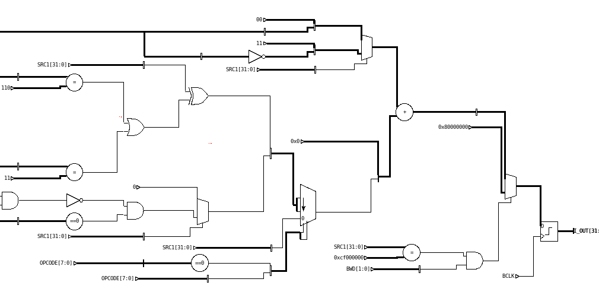

Full Stack Engineer Intern
Uber, San Francisco California
Worked on the Customer Obsessions Answer Discovery team working on predictive intent for ranking of help articles on help.uber.com.
Here I designed and implemented a new backend service in Go for ingesting Kafka messages and interacting with ML models.
Worked on frontend serivces in NodeJS to add logging of user interactions.
Built multiple ETL pipelines for training ML models as well as included logging and metrics for services using ELK and Grafana.
My project was used as a proof of concept for a larger initiative and this architecture is now being used for in-app help

Software Engineering Intern
Chalmers University, Gothenburg Sweden
Worked with professor building a design system for autonomous vehicles. My focus was to build a schematic visualization system in C. Used an existing API in Functional Language (FL) to recreate functionality in C to increase speed, accuracy, and dependability of the tool. Used advanced data structures and heuristics to create informative and accurate schematics from Register Transfer Language (RTL) descriptions.
Interests
Outside of school, I like to keep myself busy learning new skills, honing my abilities, and exploring the world
-
Traveling
-
Social Good
-
Photography
-
Design
Ever since I was a young child I have been traveling the world. Raised by Canadian and Swedish parents, I learned early the value that travel holds. It has allowed me to visit places across the world and learn about cultures and people far different from my own. While I am at home, I have been actively involved in social good projects such as food pantries, soup kitchens, and homeless shelters. My mom has devoted her life to this work and constantly inspires me to think about others, especially those on the margins of society, whenever I do something. Photography and design are also massive parts of my life. I have been working as a professional photographer for about 5 years and shoot sports, landscapes, portraits, and more. Currently, I am underway on a yearlong photography project where I post a photo a day, every day.

.jpg)